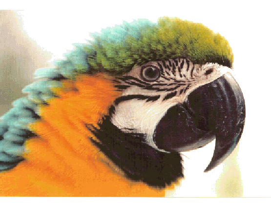
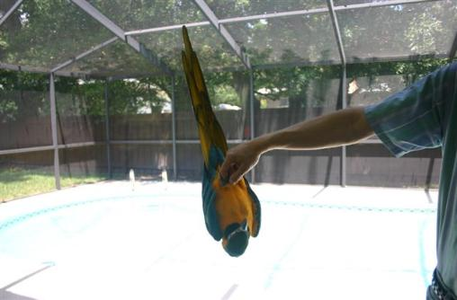
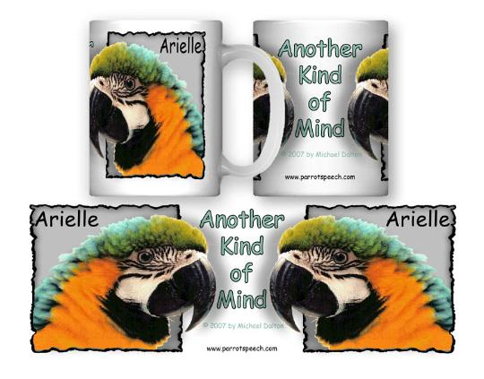

Arielle speaks freely and through the words she has learned, she
assembles coherent combinations of sentences, which represent her
thoughts. She is the first macaw to reveal such a linguistic ability
through her free speech. One might argue that the study of natural
bird communication leads to the idea that birds have language, so by
learning human language, an astute parrot is merely learning a
second language.
Information appears on this page related to my book, Another Kind
of Mind, which examines many examples of how Arielle uses English
correctly. Presented below are a variety of sound clips with reference
to the page number in the book.
assembles coherent combinations of sentences, which represent her
thoughts. She is the first macaw to reveal such a linguistic ability
through her free speech. One might argue that the study of natural
bird communication leads to the idea that birds have language, so by
learning human language, an astute parrot is merely learning a
second language.
Information appears on this page related to my book, Another Kind
of Mind, which examines many examples of how Arielle uses English
correctly. Presented below are a variety of sound clips with reference
to the page number in the book.

You are here:
Another_Mind
Another_Mind
What animal speaks using coherent language that is understandable by man? A talking bird called
Arielle does. The interspecies barrier broke when Arielle began to communicate by volunteering
information through English statements. She is a beautiful 19-year-old tropical bird that expresses
herself spontaneously using more than 4000 English words, phrases, and sentences. Her verbal
progress compares to that of a young child.
The Beatles tune, "Got to get you into my life," presented a nagging riddle. The puzzle resolved after
years of walking down a road with my macaw, Arielle. The cryptic lyric, “… find another kind of mind
there,” inspired me to describe my linguistic adventure with a talking bird.
Arielle has the ability to communicate across species using human speech when she wishes to do so.
Those who know Arielle and listen carefully to recordings of her voluntarily spoken private
monologues discover that her speech reveals her thoughts. Readers understand Arielle’s speech by
considering her statements with the provided background information.
Hundreds of transcriptions of Arielle’s voluntary speech reveal meaningful messages that form the
core of Another Kind of Mind. An unanticipated statement by Arielle reveals that she listens to what
people say and that she is capable of attributing speech to an individual by name. Many of her
statements provide concrete examples that one talking bird can learn to communicate ideas through
human language.
Another Kind of Mind traces a bird's speech development. The book provides details about how
Arielle can:
• vocalize in a previously little recognized purr-like voice,
• construct a monologue or dialogue about a topic,
• reveal her sensory impressions about the environment,
• substitutes nouns and personal pronouns correctly,
• rhyme, express emotion, and construct verbal jokes,
• apply logic in her speech and speak using proper syntax,
• organize thoughts using phrases and sequences of statements.
Another Kind of Mind guides readers toward understanding Arielle’s English words, phrases, and
sentences, as her expressions provide insight into her mind, personality, and thoughts. Her meaningful
speech communicates something never before evident from utterances made by a bird. Arielle is a
conscious being.
If you are not able to perfectly understand the speech samples below on first hearing, you are not
alone. By coordinating the sound clips with the text in the book, readers typically understand
between 65% and 95% of Arielle's utterances. The macaw speaks an unusual dialect of English.
To order a signed copy of Another Kind of Mind (288-page hardcover), send a check or money
order made payable to Arielle Publishing for $29.90** (The book is $24.95 plus $4.95 S&H).
In Florida the price is $31.65 including state sales tax and shipping. Mail orders to the
publisher: Arielle Publishing, P.O. Box 4634, Clearwater, FL 33758. For large orders, write to the
publisher at the address above or use the e-mail address. ** Be sure to clearly specify an
inscription if one is desired. Click here to read a press release about the book.
Purchase the book through PayPal from this site, click on the
"Add to Cart" button. (Takes major credit or debit cards)
** If you want the book inscribed you must send e-mail instructions
immediately to mike@ParrotSpeech.com
order made payable to Arielle Publishing for $29.90** (The book is $24.95 plus $4.95 S&H).
In Florida the price is $31.65 including state sales tax and shipping. Mail orders to the
publisher: Arielle Publishing, P.O. Box 4634, Clearwater, FL 33758. For large orders, write to the
publisher at the address above or use the e-mail address. ** Be sure to clearly specify an
inscription if one is desired. Click here to read a press release about the book.
Purchase the book through PayPal from this site, click on the
"Add to Cart" button. (Takes major credit or debit cards)
** If you want the book inscribed you must send e-mail instructions
immediately to mike@ParrotSpeech.com
Sound clips supporting the text for
Another Kind of Mind: A Talking Bird Masters English
Another Kind of Mind: A Talking Bird Masters English
Page Location Type (click Track below to play)
43 next to last, Phrase Track R
paragraph (anecdote)
53 Near bottom Sequence of statements Track P
66 19Jan’01 Innovative name (3X) Track G
66 5Feb’01 Single word Track L
86 24Jan’01 Sequence of statements Track J
87 7May’01 Sequence of statements Track W
89, 152 paragraph Humorous sequence Track ii
113 near top End of sequence Track E
124 25Feb’01 Novel response to action Track O
126 Synonyms Sequence of words Track M
139 Bottom line Novel 2-word description Track N
141 7Jun’01 Sequence of statements Track CC
142 10Jun’01 Innovative Statement Track DD
145 1Jun’01 Novel response to action Track BB
148 16Jul’01 Humorous sequence Track EE
165 17Aug’01 Novel response to action Track HH
175 8May’01 Sequence of statements Track Y
175 18Sept’01 Sequence of statements Track JJ
196 9May’01 Phrase Track Z
All materials are protected under copyright laws.
43 next to last, Phrase Track R
paragraph (anecdote)
53 Near bottom Sequence of statements Track P
66 19Jan’01 Innovative name (3X) Track G
66 5Feb’01 Single word Track L
86 24Jan’01 Sequence of statements Track J
87 7May’01 Sequence of statements Track W
89, 152 paragraph Humorous sequence Track ii
113 near top End of sequence Track E
124 25Feb’01 Novel response to action Track O
126 Synonyms Sequence of words Track M
139 Bottom line Novel 2-word description Track N
141 7Jun’01 Sequence of statements Track CC
142 10Jun’01 Innovative Statement Track DD
145 1Jun’01 Novel response to action Track BB
148 16Jul’01 Humorous sequence Track EE
165 17Aug’01 Novel response to action Track HH
175 8May’01 Sequence of statements Track Y
175 18Sept’01 Sequence of statements Track JJ
196 9May’01 Phrase Track Z
All materials are protected under copyright laws.
Suggestions for listening to Arielle's speech samples. Good isolating headphones offer superior listening to the speech samples because room acoustics are eliminated and they help a listener to concentrate on Arielle's words. Frustration quickly sets in after a short time, so if you really want to understand her words, return at a later time to listen to the clip. Ask children what they hear. It helps sometimes to listen from across the room from a loudspeaker. As one begins to comprehend Arielle's statements, think of the millions of other birds who likely are not understood by their owners .... The nature of the project is that Arielle speaks more than 100,000 words a year. If one wishes to receive her messages, a listener must review all of the words she speaks. Is it a wonder that I am 6 years behind on the project? |

| Another Kind of Mind: A Talking Bird Masters English |
Photo by Linda Carpenter
Just hanging around
© Michael Dalton
Another Kind of Mind:
A Talking Bird Masters English
A Talking Bird Masters English
Information about appearances, presentations, events to “meet the author” and
attend a book signing for Another Kind of Mind: A Talking bird Masters English
Chart of Appearances
attend a book signing for Another Kind of Mind: A Talking bird Masters English
Chart of Appearances
| Arielle understands speech and speaks thoughtfully using English words, phrases, and sentences. |

The mugs are ceramic;
the image is a dye
transfer that is
permanent and safe in
most automatic
dishwashers.
Instructions included.
Limited Edition Mugs
Available from stock...
For pricing and to order
contact by e-mail:
mike@ParrotSpeech.com

Click on the following link to listen to a radio interview about the book,
Another Kind of Mind: A Talking Bird Masters English.
Another Kind of Mind: A Talking Bird Masters English.